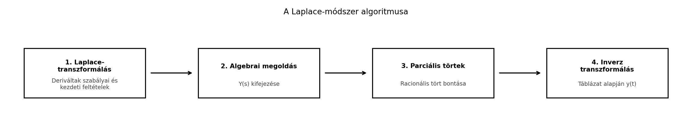
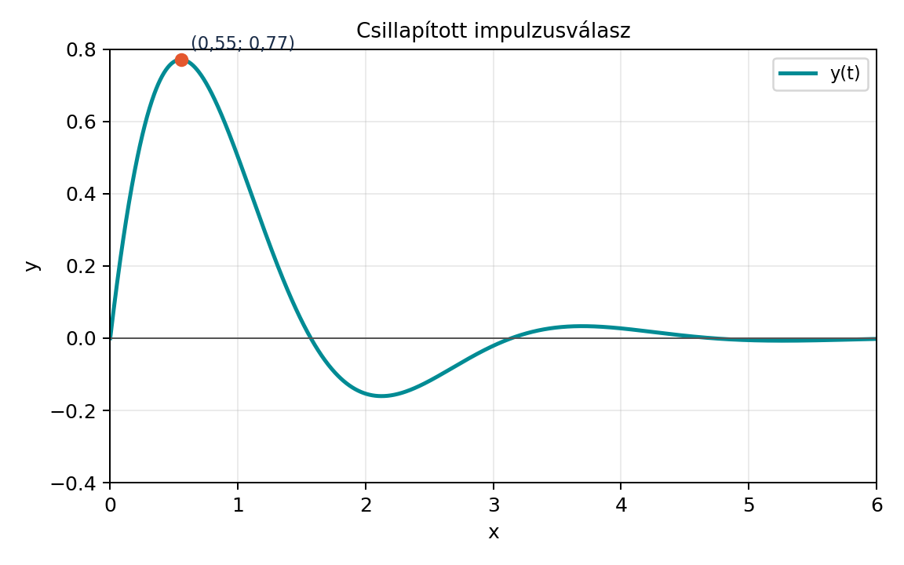

38.2 Kezdetiérték-feladatok
Laplace-transzformációval és az átviteli függvény
38.2.1 Motiváció
Amikor egy áramkörben kapcsolót zárunk, egy tartályba fűtőtestet
kapcsolunk be, vagy egy rugós rendszerre kalapácsütés érkezik, a
gerjesztés gyakran nem folytonos, hanem ugrásszerű vagy pillanatnyi. Az
ilyen szakaszos és impulzusszerű jelek időtartománybeli kezelése
körülményes: a megoldást szakaszonként kellene összeilleszteni, és a
kezdeti feltételeket minden szakaszon újra kellene számolni.
A Laplace-transzformáció ezt a problémát úgy oldja meg, hogy a
differenciálegyenletet algebrai egyenletté alakítja. A kezdeti
feltételek már a transzformálás lépésében beépülnek, a szakaszos
gerjesztések pedig egyszerű exponenciális tényezőkké válnak. Ebben az
alfejezetben a A Laplace-transzformáció
alfejezetben megismert eszközöket használjuk arra, hogy teljes
kezdetiérték-feladatokat oldjunk meg, és bevezetjük az átviteli függvény
fogalmát.
38.2.2 Szemléletes kép: a módszer
folyamata
A Laplace-módszer négy fő lépésből áll: transzformálás, algebrai
megoldás, parciális törtekre bontás, majd visszatranszformálás. Az
alábbi folyamatábra ezt foglalja össze.

A Laplace-módszer algoritmusa - Az
időtartománybeli differenciálegyenletből algebrai egyenlet lesz, majd
inverz transzformálással kapjuk a megoldást.
A folyamat kulcsa, hogy a differenciálás
-sel
való szorzásra, az eltolás pedig
-sel
való szorzásra cserélődik. Így a nehéz analízisbeli lépések algebrai
műveletekké válnak.
38.2.3 Az általános lineáris
kezdetiérték-feladat
Definíció. Tekintsük az
-edrendű,
állandó együtthatós lineáris egyenletet
a kezdeti feltételekkel
Itt
lehet folytonos, szakaszosan folytonos, Heaviside-ugrásokat tartalmazó,
vagy akár Dirac-delta impulzusokat is tartalmazó gerjesztés. A feladatot
kezdetiérték-feladatnak (initial value problem)
nevezzük.
Tétel (Laplace-módszer lineáris
kezdetiérték-feladatra). Ha az
megoldás és annak megfelelő deriváltjai exponenciális rendűek, akkor a
fenti kezdetiérték-feladat megoldása a következő lépésekkel kapható:
Vegyük az egyenlet mindkét oldalának Laplace-transzformáltját.
Használjuk a deriváltakra vonatkozó szabályokat, és helyettesítsük
be a kezdeti feltételeket.
Oldjuk meg a kapott algebrai egyenletet az
ismeretlenre.
Bontsuk
-t
parciális törtekre, és inverz Laplace-transzformációval kapjuk
-t.
Bizonyítási vázlat. Az első két lépés a
Laplace-transzformáció linearitásából és a deriváltak transzformáltjából
következik. A kapott egyenlet
-re
mindig lineáris algebrai egyenlet, mert a differenciálegyenlet
együtthatói konstansok. A megoldás egyértelműsége a
Laplace-transzformáció injektivitásából adódik: ha két folytonos
függvény Laplace-transzformáltja megegyezik, akkor a függvények is
megegyeznek azokon a pontokon, ahol folytonosak. A parciális törtekre
bontást a Racionális törtfüggvények és
trigonometrikus helyettesítések alfejezetben tanult módon végezzük.
∎
38.2.4 Első kidolgozott példa:
alapfeladat
Oldjuk meg az alábbi kezdetiérték-feladatot
Laplace-transzformációval:
1. lépés: transzformálás. A deriváltak
transzformáltját használjuk:
A jobb oldal:
Így az egyenlet:
2. lépés: algebrai megoldás. Rendezzük az
-t
tartalmazó tagokat:
Közös nevezőre hozva a jobb oldalt:
Mivel
,
kapjuk:
3. lépés: parciális törtek. Az
felírással
,
ahonnan
és
.
Tehát
4. lépés: inverz transzformálás. A táblázatból:
Így a megoldás:
Ellenőrzés.
,
,
tehát
.
Az egyenletbe helyettesítve
,
ami teljesül.
38.2.5 Szakaszos gerjesztés:
Heaviside-függvény és eltolás
Sok fizikai rendszerben a gerjesztés egy adott időpontban kapcsol be,
vagy véges ideig tart. Ilyenkor a Heaviside-függvényt és az eltolási
tételt használjuk. Emlékeztetőül:
ahol
.
Példa. Oldjuk meg az
feladatot.
Transzformálva:
azaz
A parciális törtek:
Ezért
Az eltolási tétel szerint:
Ez azt jelenti, hogy
esetén
;
esetén
;
esetén pedig
A megoldás folytonos, de a deriváltja az ugrások helyén nem az.
38.2.6 Impulzusgerjesztés:
Dirac-delta
A Dirac-delta gerjesztés egy pillanatnyi, nagyon nagy amplitúdójú
hatást modellez, például kalapácsütést vagy elektromos tüskét. A
Laplace-transzformáltja:
Példa. Oldjuk meg az
feladatot.
Transzformálva:
ahonnan
Mivel
az eltolási tétellel:
A rendszer
előtt nyugalomban van, az impulzus hatására pedig
amplitúdójú, 2 körfrekvenciájú szabad rezgés indul.
38.2.7 Inverzió reziduumokkal
A parciális törtekre bontás mindig működik, de néha a pólusok
segítségével gyorsabban célt érünk. Ha
valódi racionális törtfüggvény, akkor az inverz Laplace-transzformált
a
összeggel számítható, ahol az összegzés
összes pólusára történik. Ez a formula a Reziduumok
kiszámítása alfejezetben tárgyalt reziduum-tételből következik, és a
Laplace-transzformáció inverziós integráljának alkalmazása.
Példa. Az előző alapfeladatban
,
egyetlen másodrendű pólus
.
A reziduum:
1. Írjuk fel az egyenletet és a kezdeti
feltételeket. 2. Vegyük mindkét oldal Laplace-transzformáltját; a
deriváltaknál használjuk a
képletet. Ha a gerjesztés impulzust (Dirac-deltát) tartalmaz, a
kezdeti értékek a
határértékek
(,
,
\dots), ahogy a A Laplace-transzformáció
alfejezet kimondja; folytonos
és
esetén ezek megegyeznek a
-beli
értékekkel. 3. Rendezzük az egyenletet
-re;
a jobb oldalon a gerjesztés transzformáltja és a kezdeti feltételekből
származó polinom szerepel. 4. Bontsuk
-t
parciális törtekre, vagy használjuk a reziduumos formulát. 5. Inverz Laplace-transzformációval kapjuk
-t,
és ellenőrizzük a kezdeti feltételeket, valamint az egyenletbe való
visszahelyettesítést.
38.2.9 Átviteli függvény,
impulzusválasz és pólusok
Definíció. Tekintsük a nulla kezdeti feltételekkel
vett lineáris rendszert:
Legyen
a gerjesztés
Laplace-transzformáltja,
pedig a válaszé. Az
hányadost átviteli függvénynek (transfer function)
nevezzük. (Az átviteli függvény szokásos jele
;
a
Heaviside-függvénytől a változó,
vagy
,
különbözteti meg.)
Az átviteli függvény megadja, hogy a rendszer hogyan erősíti vagy
gyengíti az egyes frekvenciájú komponenseket. Az
impulzusválasz az a
időfüggvény, amely a
gerjesztésre adott válasz, azaz
Az átviteli függvény nevezőjének gyökeit pólusoknak
nevezzük. A pólusok alapvetően meghatározzák a rendszer időbeli
viselkedését.
Tétel (pólusok és stabilitás). Legyen
valódi racionális átviteli függvény, nevezőjének gyökei (pólusai)
.
Ha minden pólusra
,
akkor az impulzusválasz exponenciálisan lecseng, és a rendszer
aszimptotikusan stabil.
Ha van olyan pólus, amelyre
,
akkor az impulzusválasz exponenciálisan nő, és a rendszer
instabil.
Ha minden pólusra
,
de vannak a képzetes tengelyen fekvő pólusok, akkor a rendszer csak
akkor korlátos, ha a képzetes tengelyen minden pólus egyszeres; ezt
határesetnek nevezzük. Ha a képzetes tengelyen
többszörös pólus van, a rendszer instabil.
Bizonyítási vázlat. A parciális törtekre bontás
szerint az impulzusválasz
és
alakú tagok összege. Ha
,
akkor
exponenciálisan nullához tart, és
is, mert az exponenciális lecsengés erősebb a polinomiális növekedésnél.
Ha
,
a tag abszolút értéke végtelenhez tart. Ha
és
,
a tag
korlátos, de nem tart nullához; ha
,
akkor
abszolút értéke
,
tehát nem korlátos. ∎
A stabilitás tehát a pólusoknak a komplex számsík bal félsíkjában
való elhelyezkedésén múlik.
38.2.10 Rendszerek
Laplace-módszerrel
A Laplace-transzformáció lineáris differenciálegyenlet-rendszerekre
is alkalmazható. Tekintsük az
rendszert. Laplace-transzformálva:
ahonnan
Az
mátrix az átviteli mátrix, amelynek pólusai az
mátrix sajátértékei közül kerülnek ki (egyszerűsödés esetén nem mind
jelenik meg). A stabil viselkedéshez az kell, hogy
minden sajátértékének valós része negatív legyen.
38.2.11 Valós életbeli alkalmazás:
ütésszerű gerjesztés és szabályozott fűtés
38.2.11.1 Tömeg–rugó rendszer
ütésszerű gerjesztése
Tekintsünk egy
tömegű testet egy rugón, csillapítással. A mozgásegyenlet:
Legyen a gerjesztés egy
impulzusú pillanatnyi ütés:
,
ahol a
együttható mértékegysége
,
a
-é
pedig
,
így
newtonban értendő. A test az ütés előtt nyugalomban van:
,
.
Impulzusos gerjesztésnél a Laplace-módszer a
kezdeti értékekkel számol. Az egyenlet:
Laplace-transzformálva:
azaz
Az inverz transzformált:
A megoldás egy csillapodó szinuszos rezgés. A sebesség:
így
:
a sebesség az ütés pillanatában
-ról
-ra
ugrik (az impulzus
osztva az
tömeggel), majd a csillapítás miatt a rezgés fokozatosan lecseng. Az
első csúcsot az
,
azaz
egyenlet adja:
,
ahol
.

Csillapított impulzusválasz - A
megoldása:
.
Az első csúcs
s-nál van, értéke körülbelül 0,77 m
(),
majd a lengések csillapodnak.
A modell korlátja, hogy a Dirac-delta idealizáció: a valódi ütés
véges időtartamú, de ha az ütés ideje sokkal rövidebb a rendszer
lengésidejénél, a közelítés jó.
38.2.11.2 Szabályozott fűtés
bekapcsolása
Egy helyiség hőmérsékletét a
modell írja le, ahol
,
és a fűtőtest
perc után kapcsol be. A célhőmérséklet
(a jobb oldal
és a
tag egyensúlyából:
,
tehát
).
Laplace-transzformálva:
ahonnan
Parciális törtekkel:
így
Például
percnél:
A hőmérséklet aszimptotikusan a
célértékhez tart, de azt véges idő alatt nem éri el pontosan. A modell
elhanyagolja a termosztát ki-be kapcsolását és a hőveszteség
időfüggését.
38.2.12 Tipikus hibák
1. Kezdeti feltételek elfelejtése a derivált
transzformáltjánál.
A leggyakoribb hiba, hogy valaki
-höz
egyszerűen
-t
ír. Helyesen:
Ha a kezdeti feltételek nem nullák, az elhagyás rossz megoldást
ad.
2. Parciális törtek nélküli inverz
transzformálás.
Például
-et
nem lehet közvetlenül
-ként
visszaírni. Mindig bontsuk parciális törtekre, hogy a táblázatban
szereplő alakokat kapjunk.
3. Az eltolási tétel helytelen alkalmazása.
A
inverz transzformáltja
,
nem pedig
.
Az argumentumban is ki kell vonni az
eltolást.
4. Pólusok és stabilitás téves értelmezése.
A képzetes tengelyen fekvő egyszeres pólusok nem instabilak, de nem is
aszimptotikusan stabilak: a válasz korlátos, de nem cseng le. A
többszörös képzetes pólus viszont instabil, mert
szorzó jelenik meg.
5. A Dirac-delta transzformáltjának keverése.
A
transzformáltja
,
nem pedig
.
Ez az egyetlen „állandó” transzformált, ami a táblázatban nem
.
38.2.13 Önellenőrzés
Igaz-e, hogy
akkor is, ha a kezdeti feltételek nem nullák?
Oldd meg Laplace-módszerrel:
,
.
Mi a pólusok és a stabilitás kapcsolata?
Számítsd ki:
.
Igaz-e, hogy a
átviteli függvényű rendszer stabil?
A válaszok az alábbi Megoldások részben találhatók.
38.2.14 Feladatok
1. feladat (A). Oldd meg
Laplace-transzformációval:
2. feladat (A). Oldd meg:
3. feladat (B). Oldd meg
impulzusgerjesztéssel:
4. feladat (B). Oldd meg szakaszos
gerjesztéssel:
5. feladat (C). Vezesd le a pólus-stabilitási tételt
másodrendű, valós együtthatós rendszerre, és mutasd meg, hogy a
pólusok esetén a stabilitás feltétele
.
6. feladat (D). Tömeg–rugó rendszer:
,
,
.
Határozd meg a kitérést, és számítsd ki a legnagyobb kitérést (a
rendszer túlcsillapított, ezért nem leng).
38.2.15 Megoldások
38.2.15.1 Önellenőrzés –
válaszok
Nem, nem nulla kezdeti feltételek esetén a deriváltak
transzformáltjaiban megjelennek a kezdeti értékekből származó tagok,
ezért
kezdeti feltételes tagok.
,
,
.
Ha minden pólus valós része negatív, a rendszer stabil; ha van
pozitív valós részű pólus, instabil; ha egyszeres pólus van a képzetes
tengelyen, határeset; többszörös képzetes pólus instabil.
.
Nem, mert a pólus
,
amely a jobb félsíkban van, ezért az impulzusválasz
,
ami nem korlátos.
38.2.15.2 1. feladat
Transzformálás:
,
azaz
.
Parciális törtek:
.
Inverz:
.
Ellenőrzés:
,
és
.
38.2.15.3 2. feladat
,
azaz
,
.
Parciális törtek:
,
ahol
,
,
tehát
,
.
Inverz:
.
Ellenőrzés:
,
.
38.2.15.4 3. feladat
,
azaz
,
.
Mivel
,
az eltolási tétellel
.
38.2.15.5 4. feladat
,
.
Parciális:
.
Inverz:
.
38.2.15.6 5. feladat
Másodrendű esetben
,
a pólusok
,
ahol
.
Az impulzusválasz
(ha
).
Ha
,
akkor
,
tehát stabil. Ha
,
akkor
korlátos, de nem tart nullához, ez határeset. Ha
,
akkor
exponenciálisan nő, instabil.
38.2.15.7 6. feladat
Laplace:
,
azaz
.
Parciális:
.
Inverz:
A maximális kitéréshez deriválunk:
Itt
Tehát a maximális kitérés körülbelül
méter.
38.2.16 Rövid összefoglaló
A Laplace-transzformáció a lineáris kezdetiérték-feladatokat algebrai
egyenletté alakítja. Az algoritmus: transzformálás (a deriváltak
szabályaival és a kezdeti feltételekkel), algebrai megoldás
-re,
parciális törtekre bontás, majd inverz transzformálás. Szakaszos
gerjesztéseknél az eltolási tétel:
;
impulzusnál
.
Az inverzió reziduumokkal is elvégezhető:
,
összekapcsolva a komplex analízis reziduum-tételével (Reziduumok kiszámítása). Az átviteli függvény
a nulla kezdeti feltételekkel vett válasz és gerjesztés
Laplace-transzformáltjának hányadosa; impulzusválasza
.
A pólusok a nevező gyökei: ha minden pólus a bal félsíkban van
(),
a rendszer aszimptotikusan stabil; jobb félsíkbeli pólus instabilitást,
képzetes tengelyen egyszeres pólus határesetet, többszörös pedig
instabilitást jelent. Ezeket az eredményeket használjuk a 1. projekt: ferde hajítás és bolygópálya –
vektorfüggvények és differenciálegyenletek és a 2. projekt: hangelemzés – Fourier-sorok és komplex
számok projektekben, valamint a Vegyes
vizsgafeladatsor II.: többváltozós, komplex analízis és
differenciálegyenletek feladataiban.
38.2.17 Források és ellenőrzési
hiányok
A fejezet a klasszikus Laplace-transzformációs módszertant követi,
ahogyan az például a Boyce–DiPrima differenciálegyenlet-tankönyvben vagy
a jirka.org/diffyqs összefoglalóban szerepel. A konkrét számadatok
saját, ellenőrzött modellértékek; mérési adatot vagy forrást nem
állítunk. A Python-API-val kapcsolatos állítások nem részei ennek az
alfejezetnek.